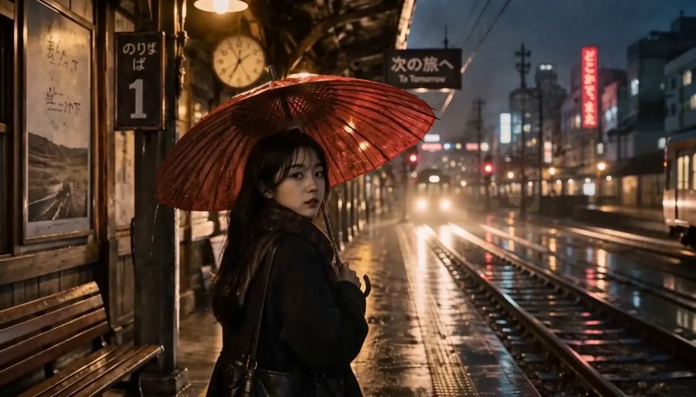

待你挑选
站台 · 人群背景
同一个镜头生成了 4 个候选，选一个就收工。
 雨夜重逢 · 第 3 集
系统正常
雨夜重逢 · 第 3 集
系统正常
等你决定
待你挑选
同一个镜头生成了 4 个候选，选一个就收工。

需要处理
提示词被内容审核拦截，换个说法可以重来。

先回查
上传中断，结果未知；先回查，别重复提交。
正在片场
声音 · 对白合成
图像 · 雨夜远景
视频 · 粗剪
今天的产出